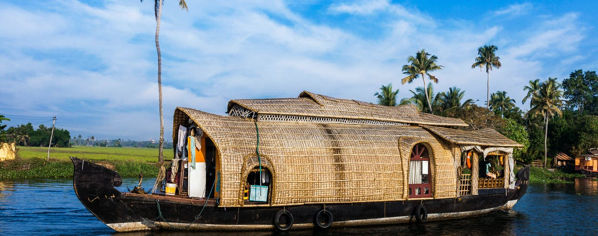

Alappuzha, also known by its former name Alleppey, is the administrative headquarters of Alappuzha District in the Indian State of Kerala. Alappuzha is a city and a municipality in Kerala with an urban population of 174,164 and ranks third among the districts in literacy rate in the State of Kerala. In 2016, the Centre for Science and Environment rated Alappuzha as the cleanest town in India. Alappuzha is considered to be the oldest planned city in this region and the lighthouse built on the coast of the city is the first of its kind along the Laccadive Sea coast. The city is situated 28 km from Changanacherry, 46 km from Kottayam, 55 km from Kochi, 129.4 km from Thrissur and 155 km north of Trivandrum. A town with canals, backwaters, beaches, and lagoons, Alappuzha was described by Lord Curzon as the "Venice of the East." Hence, it is known as the "Venetian Capital" of Kerala. In Alappuzha, Malayalam is the most spoken language. It is an important tourist destination in India. The Backwaters of Alappuzha is one of the most popular tourist attractions in Kerala which attracts millions of domestic and international tourists to the district and employs vast number of locals in the private sector. A houseboat cruise in these backwaters can be booked. It connects Kumarakom and Cochin to the North and Quilon to the South. Apart from houseboat services, the Kerala State Water Transport Department provides government boat services within the district and Quilon (Kollam) which considers the best and cheapest way to explore the Backwaters of Alleppey. It is also the access point for the annual Nehru Trophy Boat Race, held on the Punnamada Lake, near Alappuzha, on the second Saturday of August every year. This is the most popular and competitive boat races in India. Mullackal Chirap is the major Temple Festival of Alapuzha which is held for ten days every year at end of December.
Alappuzha Beach is a beach in Alappuzha town and a tourist attraction in Kerala, India. Beach has an old pier which extend to sea is over 150 years old. Alappuzha beach host many events annually like Alappuzha beach festival, Sand art festival and many more.
Vembanad is the longest lake in India, and the largest lake in the state of Kerala[Mangrove with area 2114 sq. Km is the second largest Ramasar site in India only after Sunderbans in West Bengal] Spanning several districts in the state of Kerala, it is known as Vembanadu Lake in Kottayam.